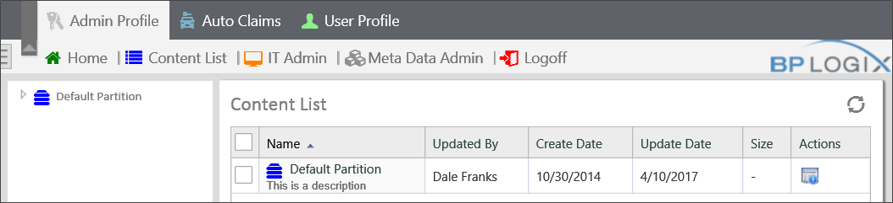
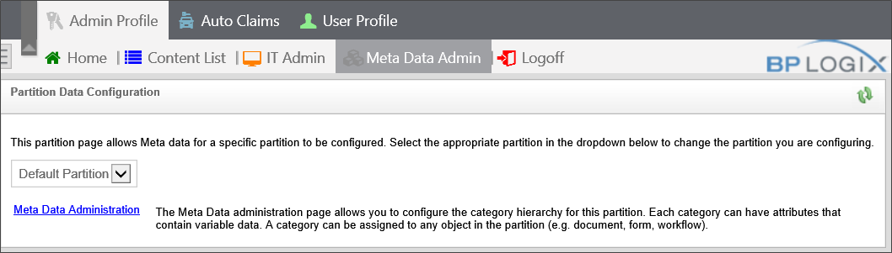

|
|
Lesson Contents | In this Lesson, you will learn the basic administrator types, and the primary elements of the Administrative user interface. |
The administration section of Process Director is completely web-based, giving you full access to the administrative functions from any web browser, provided, of course, that you have System Administrator privileges in Process Director, and that you can access the network location. You may access the administration section by navigating to http://[ServerName]/admin/admin.aspx.
There are two different types of administrative permissions: System Administrator and Partition Administrator.
A System Administrator has the ability to configure Process Director and has access to the administration section of the server. A user may only be a System Administrator if the check box for System Administrator is checked in the user’s profile, which we'll cover in detail in a future lesson. The user can only be granted that permission by a System Administrator.
The Content List of a Process Director installation can be split up into separate partitions, each of which has its own users. A partition user may be specified as a Partition Administrator. A Partition Administrator does not have access to the System Administration section of the server, but is an administrator of the Partition, which grants full permission to every object in the Content List, regardless of the individual permission settings on the Content List objects. A Partition Administrator can edit, move, or delete every Content List object in the Partition. We will discuss the details of Partitions in a future lesson.

When Process Director is installed, a default Admin Profile is created automatically. The Admin Profile provides administrators with access to the management functions of the Process Director installation. As a best practice, of course, access to the Admin Profile should be limited to users with a need to perform management functions.
As a practical matter, both the Home and Content List tabs point to the Content List, as a default. Administrators may edit the Workspace configuration of the Home area to display different items than the default Content List.
The vast majority of administrative tasks will be performed in the IT Admin area of Process Director.
The Admin Profile, by default contains the following menu items, in addition to the one's we've already discussed.
If you click on the IT Admin tab, Process Director directs you to a summary page.

The Process Director Administration summary page lists the basic installation settings at the top of the page. Below the installation settings is a menu bar that provides access to four different administration sections, and provides access to the following functions:
| TAB | DESCRIPTION |
|---|---|
| Configuration | Enables you to create Workspaces or Partitions. |
| User Administration | Enables you to create and manage Users and Groups, as well as set up Directory Synchronization to LDAP or AD user directories. |
| Installation Settings | Enables you to change the default installation settings for Process Director. |
| Troubleshooting | Provides access to logging and testing tools, such as the internal logs, audit logs, and email functionality tests. |
The System Administrator has full permission to access any area of the IT Admin section of Process Director, but users can also be assigned a subset of administrative permissions that enable them to access only specific portions of the IT Admin section.
| ADMIN TYPE | DESCRIPTION |
|---|---|
| System Configuration Admin | A subset of the system administrator user, with access only to the Configuration tab. |
| System User Admin | A subset of the System Administrator user, with access only to the User Administration tab. |
| System Installation Admin | A subset of the System Administrator user, with access only to the Installation Settings tab. |
| System Troubleshooting Admin | A subset of the System Administrator user, with access only to the Troubleshooting tab. |
A user can be configured with one or more of these options. If user is configured as System Administrator, all of these options are also selected on the user's account profile page.
 If the IP Address of a user's computer is specified in the Properties Page of the installation Settings Area, the user settings in the user's account page are ignored, that user will be granted full access to the IT Admin area, irrespective of the configured user settings. In that case, the users who access the server from that IP Address will be treated as if they were directly logged onto the server as an administrator. We will discuss that setting in a future lesson.
If the IP Address of a user's computer is specified in the Properties Page of the installation Settings Area, the user settings in the user's account page are ignored, that user will be granted full access to the IT Admin area, irrespective of the configured user settings. In that case, the users who access the server from that IP Address will be treated as if they were directly logged onto the server as an administrator. We will discuss that setting in a future lesson.

The Meta Data Admin area enables administrative users to create meta data schemas for any partition on the Process Director installation.
In the lessons that follow, we'll discuss all of these various functions and settings in detail.